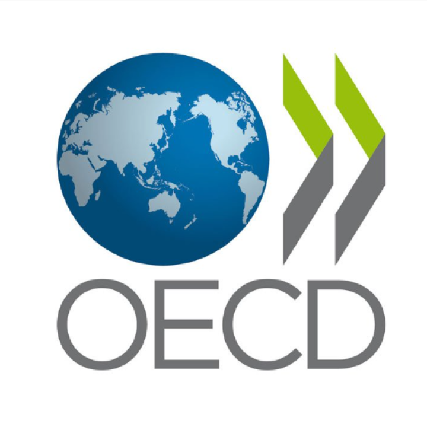

Encuesta sobre políticas
Panorama de la salud: América Latina y el Caribe
Capítulo temático sobre políticas de calidad de la atención
Este cuestionario está diseñado para recopilar información de los países de ALC sobre las políticas de calidad de la atención y los esfuerzos generales del Gobierno para garantizar y mejorar la calidad de la atención médica. El trabajo basado en esta información se publicará en 2026 como capítulo temático de la tercera edición de Health at a Glance: Latin America and the Caribbean, publicado conjuntamente por la OCDE, el Banco Mundial y el Banco Interamericano de Desarrollo.
El cuestionario consta de dos partes. En la primera parte, se define el estado de las políticas de calidad de la atención: qué existe en la legislación y la gobernanza, los estándares que guían la práctica, cómo se mide y mejora el desempeño, y cómo se relaciona a los pacientes y los profesionales. En la segunda parte se analizan las capacidades de salud digital y los usos de los datos de salud para mejorar la calidad.
Si ayuda a comunicar la información que desea proporcionar como respuesta, incluya las URL y los enlaces que correspondan.
Personas de contacto
Indique el nombre, afiliación y dirección de correo electrónico de la persona de contacto principal en este cuestionario (también puede agregar los nombres de las personas que tuvieron la responsabilidad de completar secciones específicas).
Definición de los principales términos utilizados en este cuestionario
- Hospital: Establecimientos dedicados principalmente a la prestación de servicios médicos, de diagnóstico y de tratamiento, que incluyen servicios médicos, de enfermería y de otro tipo para pacientes hospitalizados y los servicios especializados de alojamiento que necesitan los pacientes hospitalizados. Los hospitales también pueden prestar servicios ambulatorios como actividad secundaria.
- Atención primaria de la salud (APS): La atención primaria es el primer nivel de contacto de las personas, la familia y la comunidad con el sistema de salud (nacional) que acerca la atención médica lo más posible a los lugares donde viven y trabajan, y proporciona atención médica continua e integral a las personas y las familias en un entorno ambulatorio. Puede estar a cargo de médicos generales (o "médicos de familia") y sus equipos, pero también puede estar a cargo de los departamentos de pacientes ambulatorios de los hospitales de primer nivel.
- Calidad de la atención médica: La calidad de la atención médica comprende tres dimensiones fundamentales de la atención: eficacia, seguridad y atención centrada en el paciente (capacidad de respuesta). Estas dimensiones se aplican a lo largo de toda la trayectoria: cuidados preventivos, agudos, crónicos y paliativos.